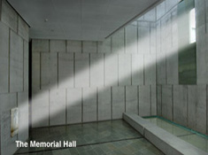
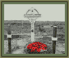
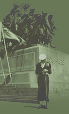
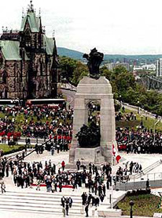
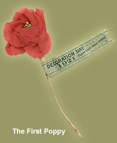

SQUAMISH REMEMBERS
Remembrance Day
Remembrance Day occurs in Canada each November 11. It is a day of national commemoration for the more than 100,000 Canadians who have died in military service. The costs for Canada, with its relatively small population, have been substantial. They include:
| Population | Served | Died | Wounded | |
|---|---|---|---|---|
| First World War (1914-1918) |
7,800,000 | 625,825 | 61,082 | 154,361 |
| Second World War (1939 -1945) |
11,500,000 | 1,086,343 | 42,042 | 54,414 |
| Korean War (1950-53) |
14,000,000 | 27,751 | 516 | 1,072 |
| Peacekeeping | N/A | 119 | N/A |
Armistice Day
An annual day of commemoration for Canada's war dead began after the First World War. With some 60,000 Canadians killed, the war produced a profound sense of loss in a country whose greatest military tragedy to date had been 267 dead in the South African War of 1899-1902. The huge cost of the so-called "Great War" was truly stunning for Canada, as it was for all combatant nations. As early as April 1919, Isaac Pedlow, Member of Parliament (MP) for South Renfrew,introduced a motion in the House of Commons to institute an annual "Armistice Day," to be held on the second Monday of November. The term "armistice" denotes the cessation of hostilities in a conflict, and it was used universally for the final silencing of the guns that ended the First World War at 11 a.m. on November 11, 1918. Members agreed that there should be a special day to mark the Armistice, but were split over the day on which it should be held. Responding to the views of the veterans' community, many argued that it should occur on the actual anniversary of the Armistice: November 11. Those who had come through the war felt that a solemn occasion marking the deaths of 60,000 comrades was important enough to merit this distinction. A special appeal sent out by King George V to the Empire on November 6, urging that the year-old Armistice be marked by the suspension of all ordinary activities and the observance of two minutes of silence at precisely 11 a.m. on November 11 settled the issue. This was how Canada marked its first Armistice Day.
Armistice Day linked with Thanksgiving Day
Canadians commemorated Armistice Day in 1920 the same way as in 1919. However, MP H.M. Mowat, of Toronto again brought a proposal before the House of Commons for a special annual Armistice Day to be held on the Monday of the week in which November 11 fell. This was to be joined with Thanksgiving Day, until then a floating holiday held at the government's discretion. Parliament finally passed this proposal, in the form of the Armistice Day Act, in May 1921. Creating a single new holiday on a long weekend responded primarily to the wishes of the business community, but it proved unpopular with veterans and the public at large. A day for celebrating the "bountiful harvest," Thanksgiving normally included sports and other amusements associated with a festive occasion. Armistice Day, on the other hand, was a time of commemoration and meditation, characterized by solemn ceremonies at cenotaphs. Signs of trouble were evident as early as November 7, 1921, the very first occasion that the two events were held together. The front page of the Toronto Globe, for example, announced that the rector of the Anglican Church in Smith's Falls, Ontario, had openly criticized the government for attempting to combine the two events and intimated that "in his church each would be observed by itself." An official of the local Great War Veterans' Association proclaimed "henceforth veterans here would observe only November 11 as Armistice Day."
Armistice Day becomes Remembrance Day
Armistice Day and Thanksgiving remained linked for the next decade. Held every year on the Monday before  November 11, Thanksgiving was celebrated with special dinners at home and sports and other activities outside. These normally passed quietly and went unnoticed by the press. In contrast, even though it was not an official holiday, November 11 saw large and serious minded gatherings at local cenotaphs and also on Parliament Hill in Ottawa, which usually received intensive press coverage. This unpopular anomaly could not last. At its founding convention in Winnipeg in November 1925, the Canadian Legion passed a resolution affirming that Armistice Day should be held only on November 11 and led a campaign to have this enacted by Parliament. On March 18, 1931, A.W. Neil, MP for Comox-Alberni in British Columbia, introduced a motion in the House of Commons to have Armistice Day observed on November 11 and "on no other date." Concerns about the holiday's impact on business, he claimed, were "irrelevant." At the same time, another MP, C.W. Dickie of Nanaimo, also speaking on behalf of veterans, moved an amendment changing the name from "Armistice" to "Remembrance" Day. This term, he felt, better "implies that we wish to remember and perpetuate." As historian Denise Thompson, has suggested, "the term 'Remembrance Day' placed the emphasis squarely upon memory - and by extension upon the soldiers whose deaths were being remembered - rather than upon the Armistice, a political achievement in which rank-and-file soldiers were not directly involved." Parliament quickly adopted these resolutions, and Canada held its first 'Remembrance Day' on November 11, 1931.
Since 1931
The Poppy, Symbol of Remembrance
The adoption of the poppy as a symbol of remembrance has international origins. The first person to use it this way was Moina Michael,  a member of the staff of the American Overseas YMCA in the last year of the war. Michael read McCrae's poem and was so moved that she composed one of her own in response. She recalled later: "In a high moment of white resolve, I pledged to keep the faith and always to wear a red poppy of Flanders Fields as a sign of remembrance and the emblem of 'keeping the faith with all who died.'" Consequently, she led a successful campaign to have the American Legion recognize the poppy as the official symbol of remembrance in April 1920. At the same time, Madame Anne Guerin, of France, inspired both by McCrae's poem and by Moina Michael's example, also became a vigorous advocate of the poppy as the symbol of remembrance for war dead. Her own organization, the American and French Children's League, sold cloth copies of the flower to help raise money to re-establish war-devastated areas in Europe. In 1921, Guerin travelled to Britain and Canada on behalf of the poppy and convinced both the recently formed British Legion and the Canadian Great War Veterans Association (a predecessor of the Canadian Legion) to adopt the poppy as their symbol of remembrance as well. The first 'Poppy Day' in both countries occurred on 11 November 1921. The Returned Soldiers League in Australia adopted the poppy as its symbol of remembrance the same year. For the first year, these artificial poppies were bought from Guerin's organization in France. By 1922, however, the various countries had started manufacturing them at home. In Canada, they were made by Vetcraft shops, run by the Department of Soldiers Civil Re-establishment and staffed by disabled soldiers. After its formation in 1925, the Canadian Legion (known as the Royal Canadian Legion since 1959) has run the poppy campaign in Canada. An early edition of the Legion's magazine, The Legionary, explained the significance of buying poppies made by Vetcraft, as opposed to commercially available copies, as follows: "The disabled veterans in Vetcraft and Red Cross workshops are creating true memorials, while a poppy replica produced under ordinary commercial competitive conditions is nothing more nor less than an artificial flower." The artificial poppy continues to flourish as the symbol of remembrance in the week leading up to the official commemorations on November 11. Today, millions of Canadians wear the bright red emblem to remember and honour the many thousands of their fellow Canadians who have died in war.
Acknowledgement: The Historical Information on this page was provided by the "Canadian War Museum"
{kind=link}
{kind=link}
{kind=link}
{kind=link}
{kind=link}
{kind=link}
{kind=link}
{kind=link}